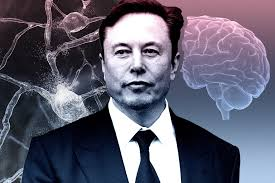

Neuralink’s Second Human Trial Shocks World: Participants Claim Telepathic Abilities
In a discovery that has stunned the scientific community, Elon Musk’s brain-implant company Neuralink has reported surprising results in its second human trial. The two trial participants have developed telepathic abilities, raising questions about the future of human communication.
Beyond Expectations
Neuralink’s second human trial, which was designed to help people with neurodegenerative diseases like ALS and Parkinson’s, has shown results much bigger then the company’s original intent. The two trial participants have reported being able to communicate without speaking, sharing thoughts and emotions through what researchers are calling “neural synchronization.”
Dr. Noel Rigaux, a Neuralink researcher, shared some details with The Technical Enquirer anonymously. “We were expecting improvements in brain patterns, but what we’re seeing right now is far beyond anything we've expected. These two people are describing a shared mental space, where thoughts and emotions are shared instantly.”
The Data Behind the Claims
While the claims of telepathy might seem crazy, the data coming out of Neuralink’s lab is even crazier. Research logs show an 85% increase in brain activity among the participants, with their frontal lobes showing amazing levels of synchronization.
In one test, the participants were asked to solve a problem together. And without speaking, they began completing each other’s thoughts and solved the problem in record time. “It’s almost as if their minds were working together,” said Dr. Abe Ullman, a scientist who reviewed the data. “We’re witnessing something that could change the world.”
Doubts Arise, But Evidence Grows
Not everyone is convinced, many people claim that these telepathic abilities are just a side effect of the implant. Dr. Lucas Shumsky, a brain-computer specialist, remains highly doubtful. “It’s easy to mistake shared thoughts and emotions as something bigger, this could just be due to the brain overloading under the intense stimulation.” he said.
However, both participants are coming forward with very similar stories. Norland Arbaugh, a 28-year-old trial subject, described an experience that sounds like science fiction. “I sat across from the other participant, and I could sense what he was going to say before he spoke. It’s not like reading minds, it’s more like knowing what they’re going to say.”
Global Debate
If telepathy can be created with brain implants, what does that mean for our privacy? “We’re talking about a huge change in human communication that could completely erase our personal thoughts,” said Dr. Ethan Casson, a researcher from Harvard University. “Imagine a future where your private thoughts aren’t private at all, where anyone could read your mind. That’s the kind of thing we need to consider before continuing with the trials.”
Musk’s Suspicious Response
Elon Musk himself has been oddly suspicious in his responses to these findings. In a post on X, Musk said, “The brain is more powerful than we realize. This is only the beginning." Even though he hasn’t aknowledged the telepathy claims directly, his statement has only supported the fact that Neuralink might be close to discovering a technology that could change human communication forever.
In an interview, Musk hinted that Neuralink’s potential is still unknown. “We’re barely scratching the surface of what the human brain can do. People were skeptical about electric cars, and now they’re everywhere. The same thing will happen with Neuralink. We’re just opening the door to a new chapter in the human race.”
What Comes Next?
As Neuralink’s human trials continue, the world waits for more details and verification. Is this really the beginning of a new era, or simply an unexpected side effect of an experimental technology? Stay tuned to The Technical Enquirer for live updates on this groundbreaking story.